技术附录：完整实验、统计与机制复盘
Tianshui Project — Retaining Clip Assembly Simulation:
Control Mechanisms, Matched Experiments and Failure Analysis of the Complete Assembly Task
摘要
本项目面向生产工位中固定夹的机器人插接、释放与稳定验收。与仅要求末端到达几何目标的运动任务不同，本任务需要在摩擦、多点接触与抓持约束同时存在时完成载荷交接：固定夹插入工装后，夹爪必须解除约束并回撤，而固定夹仍应独立保持在规定位置。现有平台已实现大、中、小三型预抓取场景、规则柔顺插入、学习残差接入与逐帧运动/受力记录，但尚未形成同时满足完整任务终点、质量和运动约束的冻结方案。本文依据已保存的源码、配置、评分文件与轨迹，对实验演进进行协议分层复盘，不新增仿真、训练或性能样本。
历史完整质量诊断中，基础控制装配成功为 20/36，45 秒综合质量合格为 9/36；普通 SAC 七轮装配成功数为 11、21、14、15、21、24、19，综合合格均为 0/36。随后建立的同条件原生终点实验共含 V1、V2 及 C1–C11 十三个实验臂，累计 324 次装配尝试，但只覆盖 36 个独特开发工况。V1、V2、C2 和 C7 的原生成功分别为 12/36、18/36、22/36、25/36。C2 通过有界搜索和输出投影降低了固定夹横向运动残差；C7 将阶段超时与实测下行进度关联，进一步改善了小型工况。然而，C7 对 V2 的配对检验为 11 胜 4 负，精确双侧 McNemar p=0.1185，尚不足以确认统计优势。在共同追加的 100 mm 回撤及 1 秒位姿稳定初筛中，V1、V2、C7 分别通过 2/12、3/12、0/12，显示原生终点收益不能直接外推到完整装配任务。
轨迹分析表明，当前问题同时包含内部积分目标与受限输出失配、固定阶段计时提前交接、开指后固定夹拖带、回撤局部运动学可行性，以及运动约束审计后置。接触报告相对 authored convex hull 的几何差异也需要解释，但已有反证不支持将所有失败归因于单一碰撞算法或接触生成距离。本文据此提出：先统一任务与测量契约，将卸载、开指、脱离和回撤设计成同一受约束混合控制过程；在可靠基线上再评价历史观测与有界残差学习的净收益。本文的性能结论限定于已见开发工况，既不代表真机验证，也不代表最终 Goal 已完成。
关键词：固定夹；接触装配；柔顺控制；残差强化学习；释放交接；匹配实验；独立稳定验收
1. 研究背景、研究问题与证据范围
1.1 场景背景：研究对象是一次完整的装配交接
天水项目研究机器人将固定夹插接到指定工装、释放并撤离的过程。固定夹是被操作的工件，机器人通过末端夹爪抓持它，承载工装提供插接槽位与最终位置约束。从运动外观看，任务像一次“把板状工件向下插入”的操作；从控制本质看，它却是一次定位责任和承载责任的转移：开始时由夹爪控制固定夹，插入过程中夹爪和工装共同施加约束，完成后则应由工装保持固定夹，机器人不再提供支撑或牵引。
这一责任转移决定了“机器人到了哪里”和“固定夹是否装配完成”必须分别回答。末端到达预定位置，可能同时伴随夹持滑移、槽口卡滞或侧向变形；固定夹某一帧位置接近目标，也可能仍依赖夹指支撑，松开后才出现偏移。因而任务目标不只是最小化一个位置误差，而是依次建立正确接触、获得有效插入进度、完成载荷转移、解除抓持约束，并在机器人回撤后确认固定夹保持稳定。报告后续的控制设计和评价分层都由这一物理过程出发。
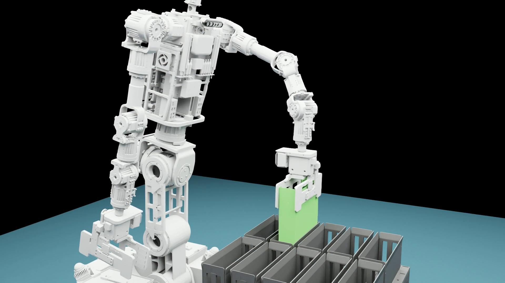
同一次装配，两个观察尺度
上：机械臂全景 下：固定夹侧面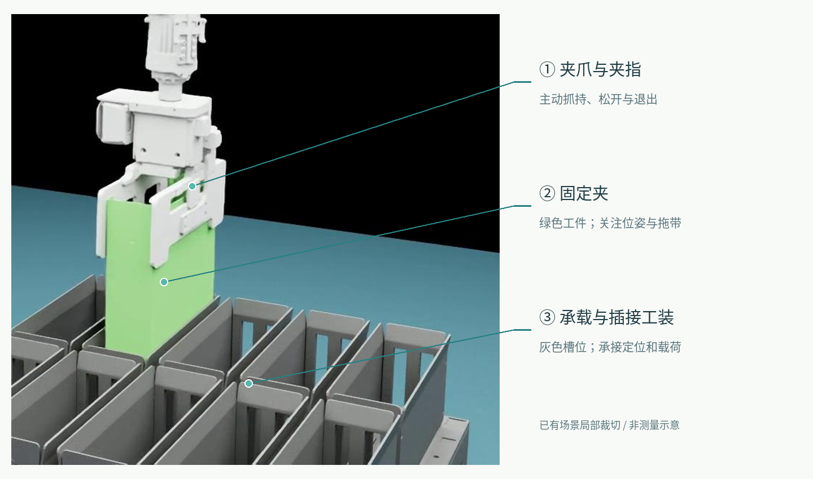
当前平台包含大、中、小三型预抓取场景，日志中的 lab1、lab2、lab3 分别对应这三型。型号变化不仅是显示比例变化：工件形状、抓持关系、局部接触路径和所用控制配置会影响对准、卸载与退出。因此，三型需要分别统计，不能用一种型号的流畅演示替代另外两型的闭环证据。下图用于建立视觉对应关系，具体尺寸、间隙和容差仍应以模型及经标定的测量为准。
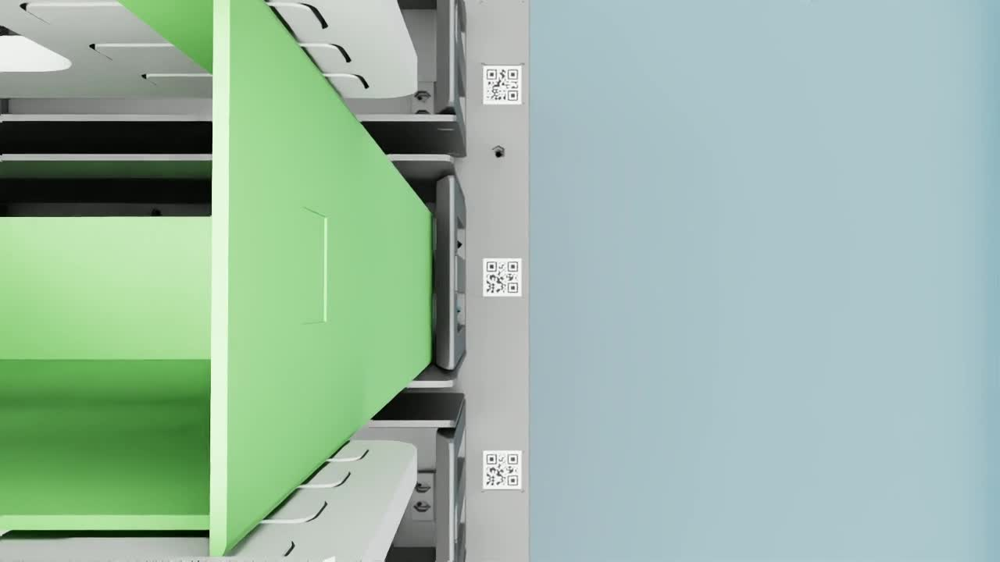
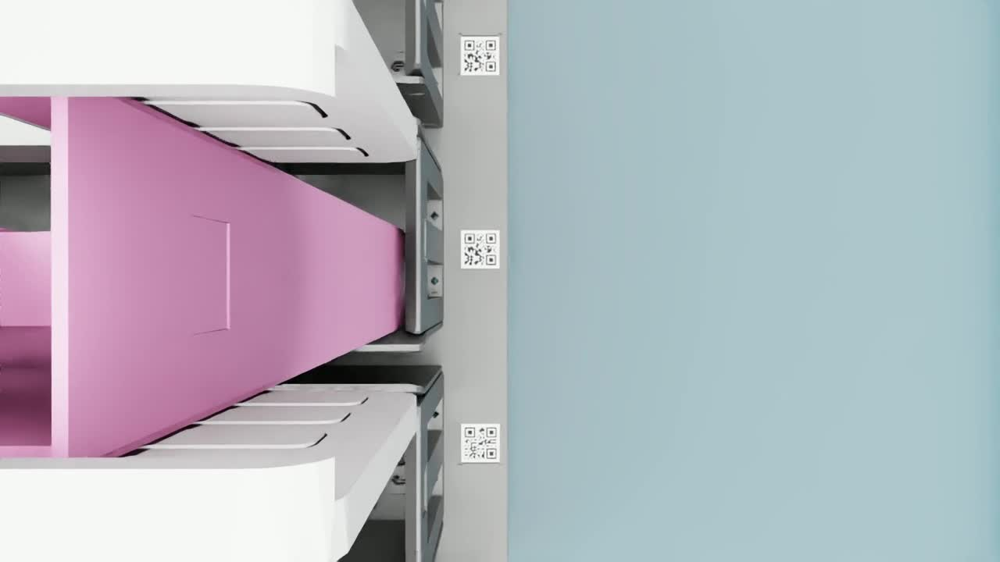
图 1B：上游原始三型示例的固定时刻截图。相机位置和画面比例不同，不能据画面直接比较真实尺寸；这些截图不是三次新的本地评测。
1.2 用框图还原场景：命令、接触、观测与评价
理解场景需要同时回答四个问题：谁在发动作，谁在承受接触，控制器实际看到了什么，以及最终由什么规则判定成功。图 1E 将这四条链路分开。任务配置给出型号、目标和复位条件；阶段控制器生成末端与夹指请求；请求经过投影、IK 和关节驱动才作用于机器人；机器人再通过夹指与固定夹、固定夹与工装的接触影响工件运动。因而“网络输出了正确修正”“发送目标已经下降”和“固定夹真实进入槽位”是三个不同层次的事件。

在物理链路中，应重点观察两个接触接口。第一个是夹指—固定夹接口，它决定工件是否被稳定抓持、是否发生相对滑移，以及松爪后能否真正解除约束。第二个是固定夹—工装接口，它决定入口对准、插入阻力、支撑与落座。两者不能独立调到“越紧越好”或“力越小越好”：抓持不足可能滑移，抓持尚未解除又会阻碍独立保持；低合力既可能表示顺利滑入，也可能表示尚未接触或载荷被其他方向抵消。图 1A 的局部标注用于定位对象，图 1E 则说明对象之间的作用关系。
在观测链路中，编码器反映机器人及夹指运动，腕部力/力矩反映混合受力，仿真真值可以直接给出固定夹位姿，录像提供定性回看。当前原生控制仍使用固定夹真值参与对准、阶段和释放，不能把整条闭环称为纯力觉可部署系统。独立评价器则在保存轨迹后计算结局和质量，它有理由使用诊断真值，但不能因此把这些信息默认为真实控制器也可获得。明确这一区分，才能判断失败来自感知不足、控制逻辑、执行失配还是评价协议。R3、R4、R10
1.3 完整流程框图：每个阶段怎样走向成功或失败
图 1F 将任务分成六段。左列是每段承担的动作职责，中列是交给下一阶段前应回答的物理问题，右列是已有记录中发现的风险和对应证据。图中“应检查”的条件综合了正式任务要求和历史暴露的缺口，不代表现有状态机已完整实现；尤其是原生结束与完整验收仍有断点。正常推进意味着动作和交接条件同时成立，条件不足时需要继续观察、有限恢复或记录失败，而不是仅因计时到达就宣布完成。

从交接到入口。 当前仿真从已经抓住固定夹的状态开始。型号配置、目标坐标、抓持关系和实际复位扰动共同确定后续难度；若这些条件变化，后续成功率就不是同一问题。机器人接近入口时，关键是实际末端和固定夹是否处于可插入区域，而非参考轨迹是否已经播放结束。有界搜索可以处理部分横向偏差，但逐帧累积的搜索偏移可能把目标推离搜索中心；C1 修正过这一实现问题，却没有单独带来净成功收益，说明入口风险被收缩并不等于整条任务已解决。
从接触到插入。 自由空间中的横向修正通常能减小误差，接触之后同样的修正却可能增加侧向挤压。继续下降可能把初始错位转化为大载荷，遇力抬起后又继续下压则可能反复接触。另一方面，投影和限幅降低突变，也会改变实际到位时间。若内部目标和计时器仍按旧速度推进，控制器可能在插入不足时提前卸载。此处要联合看固定夹进度、末端请求与实测差、受力和阶段，不能只观察某一条平滑曲线。
从落座到松爪。 落座是载荷转移的开始，不能只凭 Z 深度或 seat 分支名判定完整到位。卸载应让工装接管支撑，再解除抓持；夹指开度请求是否实际实现、固定夹是否随开指移动，是这一段的关键观测。仅增加请求开度可能被真实关节范围截断，继续回撤还可能将残余接触转化为拖带。后文成功与失败录像均触发 seat，但残余位置误差不同，正说明阶段事件不是最终结局。
从脱离到完整验收。 机器人必须沿满足关节和笛卡尔运动约束的路径退出，同时固定夹保持目标位置。腕姿放开可能改善可达性，却改变夹指扫过工件的路径；横向让位可能减少拖带，却增加路径长度与速度需求。因此实测达到 100 mm 只说明回撤距离满足一项条件，还必须确认固定夹未被带走、稳定窗口完整，以及全历史质量与运动约束未违反。任一保护停止、超时或缺测都应进入明确的失败记录。
1.4 仿真解读：把画面、信号和结局接成证据链
对每个仿真案例，本文采用“先定位阶段，再辨认相对运动，最后核对约束与结局”的阅读顺序。场景画面先帮助辨认夹指、固定夹与槽位；相对运动判断应分别看末端—固定夹、固定夹—工装两个关系；轨迹再检查请求、实测、受力和阶段切换是否同步。最终评价读取冻结协议，而不由视频观感决定。下面将关键成功失败因素与现有证据对应起来，便于沿框图回查，不把可能的影响因素都写成已经确认的唯一根因。
| 流程位置 | 画面与轨迹应如何解读 | 已有证据与结论边界 |
|---|---|---|
| 入口与横向搜索 | 看固定夹相对目标槽位是否偏离；核对搜索中心、请求范围与实测轨迹 | C1 将搜索偏移由累加改为有界输出；12 例仍为 6/12，无净收益。支持实现修复，不证明入口问题全部解决。 |
| 接触插入与阶段计时 | 看下行是否仍在推进；对齐固定夹 Z 差、腕力和卸载入口 | 同初态小型 case 04，C2 在 13.783 s 卸载，Z 差绝对值 10.780 mm；C7 在 14.883 s 卸载，差 1.935 mm，结局由原生失败变为成功。支持部分提前交接机制。 |
| 落座与位置残差 | 深度接近不等于三维位置正确；横向残差应单独检查 | 上游中型两例均为 seat，成功例误差范数约 0.857 mm，失败例约 2.354 mm；来源未给唯一失败原因。 |
| 松爪与回撤拖带 | 看末端退出时固定夹是否跟随；把回撤距离与工件误差分开绘制 | 自适应腕姿的三条大型记录约回撤 106 mm，却拖动固定夹约 8.4–8.9 mm。说明回撤距离不能替代工件保持。 |
| 退出可达性与运动约束 | 同时看 FK 路径、实测运动和速限；保护停止不能当作成功 | 横向交接小批必要终点 4/9；后续加入笛卡尔约束的方案为 1/9。两批行为不同，不能当作单因素消融或总体成功率下降。 |
| 接触物理与测量链 | 将画面外形、实际碰撞代理、接触报告及时刻对齐 | 已发现相对 authored hull 的报告距离差异；SAT 与减小 offset 未消除现象。仍需核对 cooked 几何，不能断言全部失败来自引擎。 |
表 0：流程节点—可观察现象—现有证据的对应关系。来源：[C1–C5 复盘](evidence/matched-progress.md)、[case 04 阶段记录](data/case04-progress.json)、[视频索引](evidence/upstream-video-index.json)、[自适应回撤](evidence/adaptive-review.json)、[交接审计](evidence/handover-motion-audit.json)、[限速评审](evidence/twist-review.json)、[接触几何](evidence/contact-proxy-review.json)。
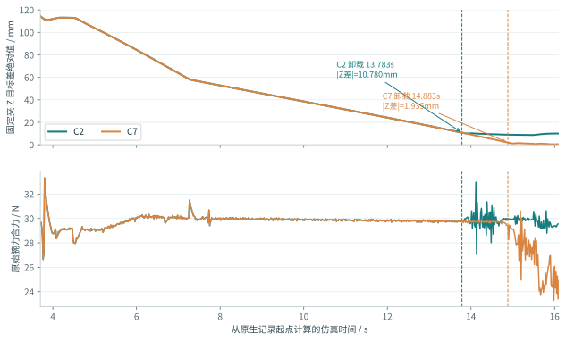
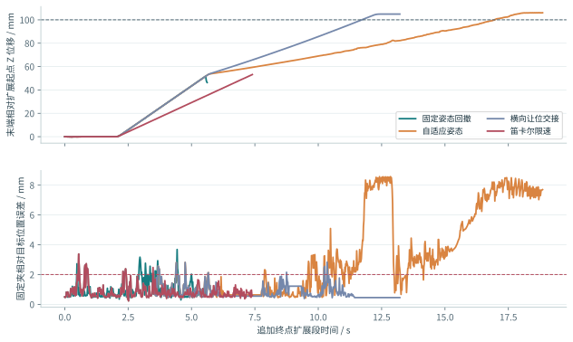
侧面近景能帮助观察相对滑动，却无法独立测量受力和高频抖动；俯视图便于确认槽位关系，却不一定能确认深度。上述框图、截图和曲线承担互补职责：框图规定应追踪的关系，画面说明物理对象和可见现象，曲线刻画时序与数值，冻结评价给出结局。只有这四层相互一致，才能把一个“看起来的问题”推进为可复核的工程判断。
1.5 成功与失败实例：相似画面为什么得到不同结局
为避免只展示精选成功，本章并列展示上游 V2 发布包中的两条中型录像：ep_00000 在来源索引中标为成功，ep_00001 标为失败。它们来自同一发布视频集合，但不是同一初态下两个控制器的配对实验，也不是后文 36 工况本地比较的案例。因此，这里用它们说明任务和观察方法，不用两条录像估计成功率。视频索引、本章摘录
相同观看时段，不同末态
上：成功标签 下：失败标签下面从各自录像按相同播放器时刻提取画面，依次观察早段、中段和接近片尾的相对关系。这里刻意不把 t=1、10、19 秒直接命名为精确的控制阶段：这些视频尚未与独立仿真时钟逐帧标定，相同播放器时刻也不保证相同物理事件。精确的进入、落座和释放时间，必须回到有阶段字段的轨迹，而不是凭画面补写日志。
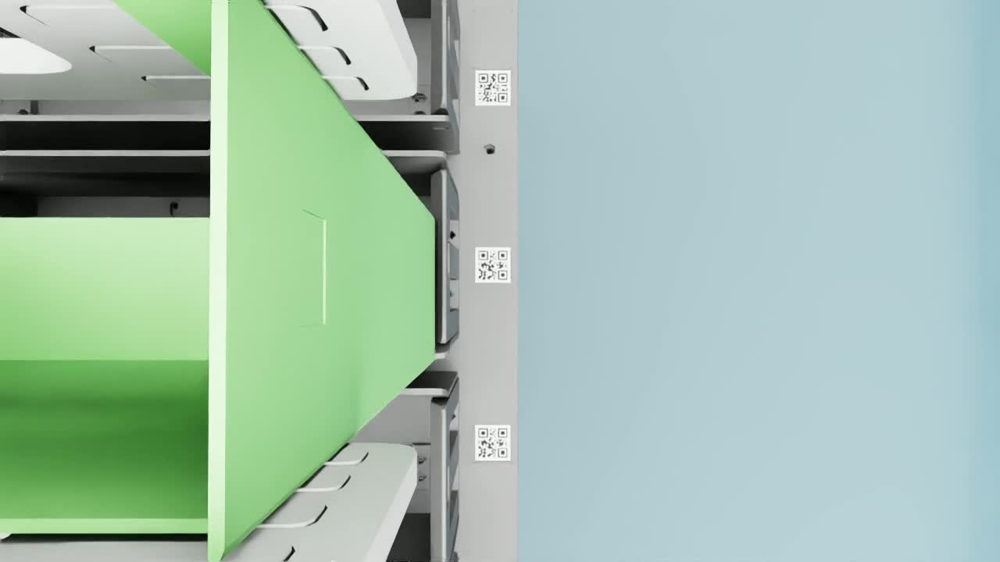
早段 / t=1 s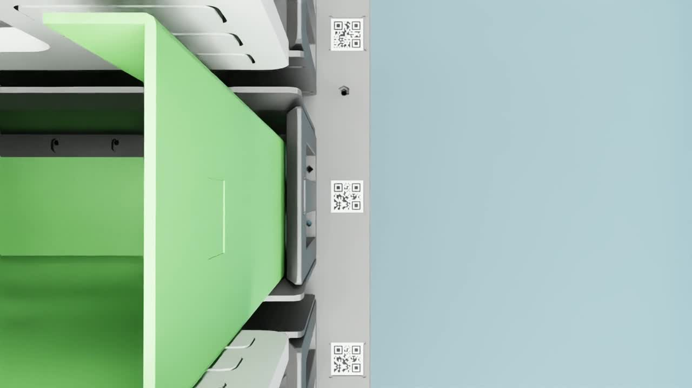
中段 / t=10 s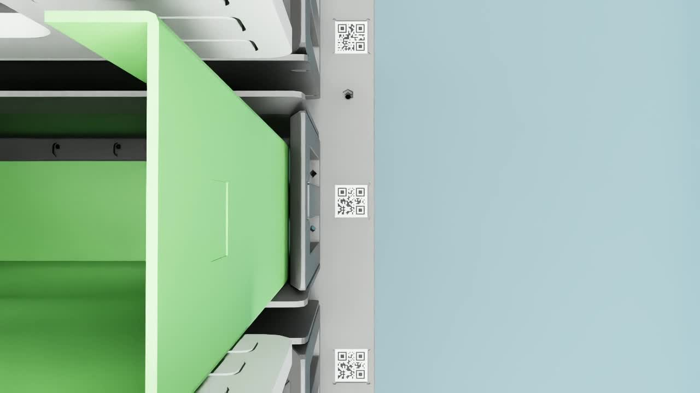
接近片尾 / t=19 s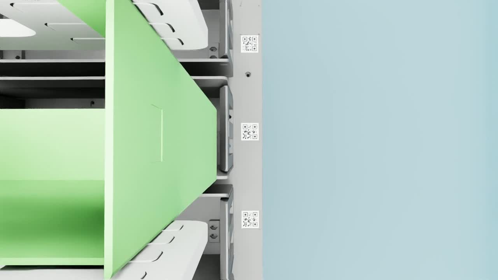
早段 / t=1 s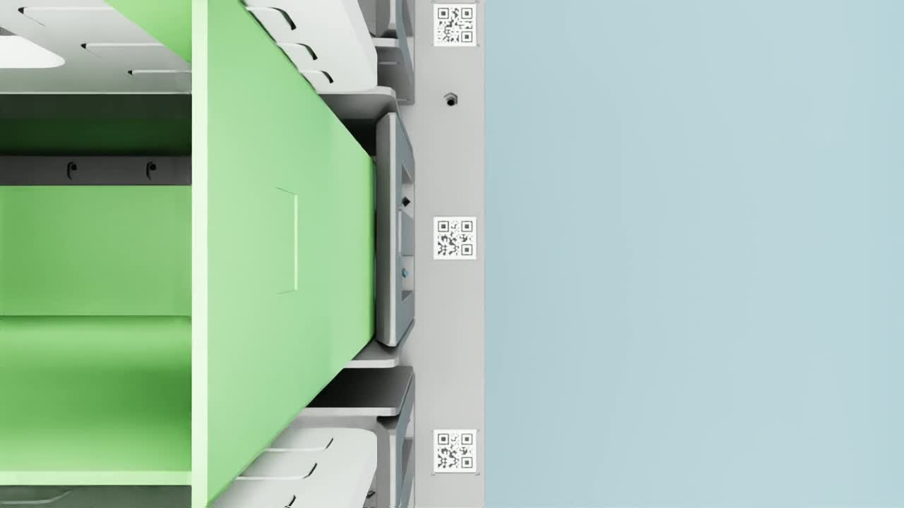
中段 / t=10 s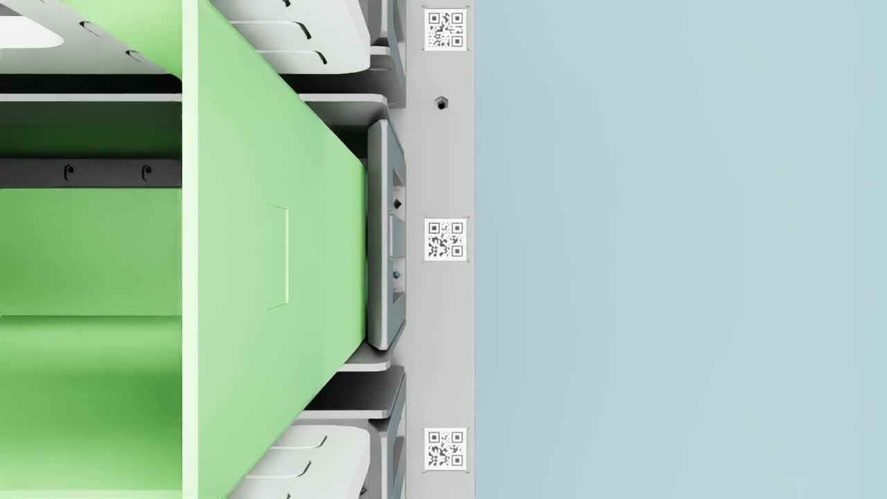
接近片尾 / t=19 s这组示例有两个值得注意的事实。其一，失败例的 Z 分量仅 0.01 mm，但 X 分量为 −2.35 mm，说明“插入深度看起来已经到位”仍可能遗漏横向残差；必须检查完整位置而不能只看下行是否结束。其二，两例都记录了 seat 交接，说明控制器进入落座相关分支与最终成功标签并不等价。来源索引的 reason 字段为空，无法据此认定失败的唯一机制。本文只报告记录明确支持的误差和标签，不把它进一步编写成“确定发生了刮碰、穿模或释放拖带”。
1.6 从示例到评价：成功必须附带条件和分母
成功示例证明一种行为在某条轨迹中出现过，失败示例提示应检查哪些变量；二者都不能替代总体评测。一个方案可以偶尔完成非常流畅的动作，同时在多数扰动工况中失败；另一个方案也可能比原始 demo 更慢、更不适合剪辑，却在相同初态下有更高的通过数。因此，展示质量、装配成功率与完整质量合格率需要分别说明。网页保留成功和失败媒体，正是为了避免只由最顺畅的一条轨迹建立对系统可靠性的印象。
本报告使用四个逐步加强、但不能混合排名的评价层次：旧协议的装配与九项质量；匹配实验的原生成功；追加回撤与独立稳定的必要终点；正式 Goal 的完整任务与独立验证。它们不是对同一录像换个名字。尤其是成功标签示例并没有提供“夹爪实测回撤至少 100 mm、随后连续 1 秒独立稳定且全部质量约束合格”的完整证据，不能自动升级为最终成功案例。
现有数值也体现这一差别：旧协议基础控制为 20/36 装配成功、9/36 综合合格；同条件原生轨道中 C7 为 25/36 原生成功；但给 C7 追加共同回撤和稳定终点的初筛只有 0/12。前后不是同一分母、同一结束事件或同一约束集合，不能解释为控制器突然从 69.4%“退化成零”，更合理的解释是后一个测试暴露了前一个测试尚未覆盖的任务环节。第 5 章给出协议细节，第 7–8 章给出逐例结果和机制证据。
1.7 当前实现与真实目标之间的距离
当前仿真能够回放关节轨迹、执行笛卡尔插入、施加型号相关修正，并记录卸载、松爪及后续运动。它从已经抓住固定夹的场景开始，尚不包含从散乱来料中识别、选择抓取点并完成抓取的全过程。因此，本阶段的研究单元是“预抓取后的接触装配与释放”，不能被描述成已经完成完整生产上下料单元。这一边界也决定了下一步应先解决已覆盖环节的可靠性，再扩展前端感知和抓取。
更关键的差异在观测条件。现有原生控制器直接使用仿真固定夹位置计算误差、决定阶段和引导释放；录像相机主要用于观察，尚不是已经验证的视觉闭环。真实系统则必须从视觉、编码器、力/力矩和抓持状态中估计相应状态。虚拟场景可以直接给出的位置，并不等于真机传感器随时能够可靠测到的位置。若忽略这一点，控制器可能在仿真中借助不可部署信息完成动作，而实际系统没有对应输入。
现有数字资产也不等于已完成材料本构、真实形变、驱动响应与接触刚度标定。本报告没有足够证据声称它们精确复现真实工件全部响应，也没有真机闭环结果来验证性能迁移。因此，当前仿真的主要价值是还原控制实现、定位接口失配、形成可检验假设并比较受控机制；能否用于生产性能预测，仍取决于后续测量链和真机验证。上述范围来自原始算法审查及匹配协议。R1、R2
1.8 本文回答的问题与证据组织方式
本文围绕四个相互关联的问题组织论证：原始 demo 的动作究竟由什么控制结构产生；已有修改改善了哪些可测现象、又牺牲了什么；为什么原生成功率改善没有形成完整任务优势；下一阶段应怎样组织控制与实验，避免在互相失配的局部模块上累加补丁。由任务定义进入方法与协议，再用统计和案例解释结果，能够把“做了什么”和“证据证明到哪一步”连接起来。
本文把证据分为三类。保存的轨迹、运行时读回、结果 JSON 和完成标记构成观测事实；由对照实验排除或支持的机制构成有限因果证据；尚未实施的导纳、状态估计或学习结构属于后续设计建议。源码发现一个风险，不能直接证明它造成了全部失败；一次机制改动提高通过数，也不能在同时改变多个行为时唯一归因。成功与失败图片提供场景和现象入口，后续定量章节承担结局判定和因果分析，二者互相补充。
2. 任务建模与装配过程的责任划分
2.1 状态、动作与可观察量
为了明确不同模块的责任，记机器人和夹指的关节状态为 q、q̇，末端位姿为 TBE，固定夹位姿为 TBC，目标工装位姿为 TBT，腕部测得的六维力/力矩为 w，夹指开度为 g。B 表示机器人 base 坐标系，E 表示末端参考框架，C 表示固定夹，T 表示任务目标。这套符号是本文的统一表达，不意味着每个历史版本都使用相同变量名或完整六维状态。
原生控制器实际使用的任务误差主要是平移误差 ep=ptarget−pclip，某些型号还在控制目标中叠加固定 XY 偏置。末端参考与固定夹目标不是同一物理量：抓持变换、夹持滑移及夹指运动可以使末端与工件的相对关系变化。因此，末端到达命令、固定夹到位和夹爪已经脱离是三个不同事件，不能互为替代。轨迹中分别保存 ee_pos、ee_cmd、retaining_clip_pos 与关节状态，正是为了把这些事件拆开。
在真实系统中，TBC 和接触身份一般不是直接可读状态，控制器需要使用估计量及其不确定度。仿真真值适合诊断和独立评价，也可以用于研究带特权信息的训练，但如果部署 actor 或外层状态机仍实时读取真值，就不能把系统描述为“纯力觉可部署控制”。这一问题不取决于神经网络本身是否只接收力输入，而取决于整条闭环的观测依赖。
2.2 六个阶段及其交接条件
完整流程可分为粗定位交接、接近与对准、柔顺插入、落座卸载、松爪脱离、回撤验收六个阶段。第一阶段负责确认型号、目标参考、预抓取状态和坐标系；第二阶段负责把末端带到可接触区域，平稳切换控制；第三阶段负责在受力约束下获得插入进度；第四阶段负责确认到位并转移抓持载荷；第五阶段负责解除夹指与固定夹约束且不破坏位置；第六阶段负责完全退出并独立确认固定夹状态。这些阶段之间应通过可观测的物理条件交接，而不是仅按经过帧数推进。
以卸载到松爪为例，若仅检查腕力下降，可能把因方向抵消而降低的合力误认为接触消失；若仅检查夹指编码器到位，可能忽略指尖形状仍在工件退出路径上；若仅检查 Z 到位，可能把仍有明显 XY 误差的固定夹交给释放阶段纠正。原生代码中确实存在以 Z 到位兜底进入卸载的路径，因此其行为不是严格的“六维落座证书”。这不是要求所有阶段都必须配复杂模型，而是要求每次交接清楚说明检查了什么、尚未检查什么。R3
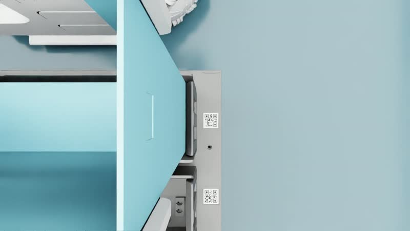
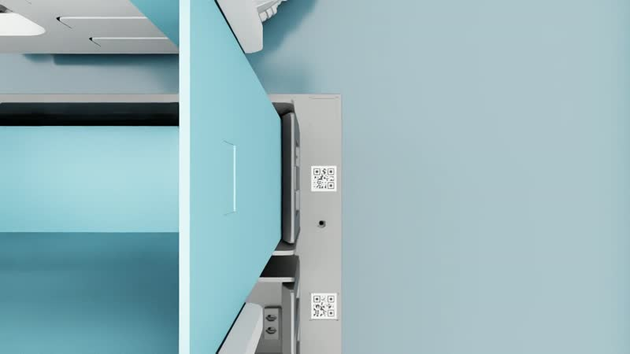
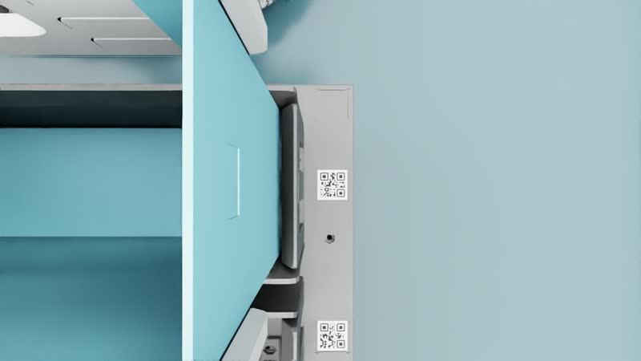
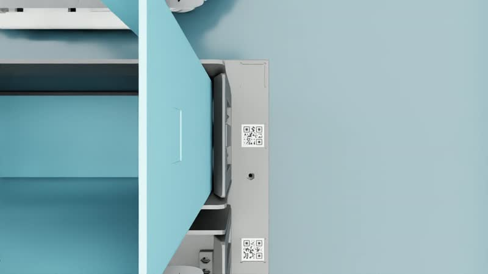
接近入口与插接
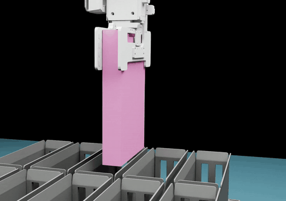
松爪与退出
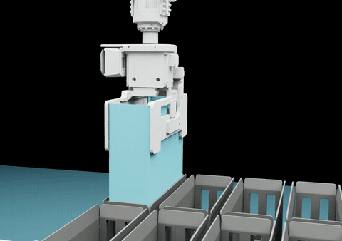
两幅 GIF 均从既有 5× 状态回放裁切，10 帧/秒抽帧，未做运动平滑或插帧；短循环方便定位动作，振幅、速度及稳定性仍需核对原始轨迹。可分别暂停。
图 2：上游大型示例中播放器 t=1、5、8、11 秒的固定截图，用于观察接近、插接及后续动作。截图时间不是独立校准的仿真时钟，不能用于生产节拍测量；精确阶段边界以日志为准。
2.3 为什么需要把系统看成混合控制过程
接触装配同时有连续变量和离散模式：位置、速度与受力连续变化，接触、卡滞、滑移和释放状态则可能突变。相同的横向修正，在自由空间会产生对准，在夹紧或楔住状态下可能转化为侧向载荷。相同的回撤命令，在完全脱离时是普通运动，在指尖仍接触时会直接拖动固定夹。因此，控制律不仅依赖误差大小，也依赖当前接触模式、估计置信度与阶段历史。
当前手写状态机已经隐式承担这一职责，但它的内部目标、计时器、释放引导和 IK 执行不总是共享同一种进度定义。后文的 C2 和 C7 结果说明，单纯改变连续输出会改变离散阶段推进的物理含义。这是本项目需要系统设计而不能只做静态增益调节的原因。
3. 原始 demo、数采器与学习模块的方法还原
3.1 原始 demo 的控制骨架
原始动作由 ReplayInsertController 与 data generator 中的控制器工厂组织。流程先稳定夹持，回放/调整关节轨迹，然后进入笛卡尔下降；在接触区间利用固定夹误差进行横向调整，利用腕力改变轴向进给，最后进入卸载、释放，部分型号还有重夹逻辑。data generator 在这里并非只做“把传感器数据写文件”：它选择场景与控制器、配置扰动、推进仿真、执行策略并记录质量，因此修改其中的控制参数或所构造的控制器，确实会改变采样分布与闭环稳定性。R4
横向对准由误差 EMA、死区、限幅积分、型号偏置与搜索共同构成；学习修正仅在限定阶段加入，并没有接管所有卸载、夹指和回撤动作。这解释了为什么“有 RL 权重”不等于 demo 的每个动作都由强化学习产生，也解释了为什么提升插入 XY 决策无法自然修复松爪和退出。
3.2 轴向力反馈的实际离散形式
在入口力控激活时，源码先计算原始三维腕力的模长 Fk=‖fk‖，再进行指数滑动平均。对应的核心更新可写为式（1）：
F̄ₖ = (1 − α) F̄ₖ₋₁ + α ‖fₖ‖
Δzₖ = clip[kf(F̄ₖ − Fref) − c, −s, 0.6s]
zcmd,k+1 = clip[zcmd,k + Δzₖ, zgoal, zentry-top]其中 α 对应 entry_filt，kf 对应 entry_kf，c 对应 entry_creep，s 对应 cart_step；部分慢速/重试条件会进一步改变下降项。对本轮 V2 配置，三型均保留 kf=4×10−6、c=0.00025、s=0.00075，参考力为 150 N。必须注意：这里 c 在该分支中直接作为每次调用的位置增量偏置相减，源码没有在该项再乘 Δt；不能仅凭注释“恒速慢压”把 0.00025 直接解释成 m/s。kf 在此离散实现中的作用也相当于每次调用的 m/N 增量系数，更换控制频率而数值不变会改变等效反馈。R3、R5
这类把力偏差映射成位置增量的外环，可以称为简化导纳式反馈；它没有显式积分质量、阻尼和刚度状态，不能等同完整六维 M–D–K 导纳，也不能因为机器人关节驱动存在刚度/阻尼参数就称为已实现六维阻抗控制。合力模长还是无符号量，无法单独区分轴向阻挡、横向挤压和抓持载荷。若没有坐标变换和重力/偏心补偿，控制器响应的是混合受力，而非纯粹插入轴外力。
从离散反馈结构可以解释同事讨论中的自激风险：接触建立时力突然上升，位置反馈把末端向上修正，接触力消失后爬行项又使其下压，产生反复接触；积分目标、执行迟滞与滤波延迟还会改变回路相位。但这是与源码一致的机制解释，不是对全部失败的单一归因。实际证据还显示卡滞、释放拖带及运动学问题，因此不能只通过降低 kf 就假定系统会全面改善。
3.3 在线滤波与离线质量统计的区别
群聊曾将质量处理描述为“五帧中值”。源码核对显示，_quality() 中相应计算使用 np.convolve(..., ones/5)，实际为五帧滑动平均，而且用于事后统计；在线入口力反馈另有 α=0.3 的 EMA。两者不仅滤波类型不同，作用位置也不同：在线滤波影响控制器下一步动作，离线滤波只影响如何报告某些峰值。将事后平滑曲线解释成控制已经降振，会颠倒因果关系。R6
在后续报告中，我们还计算了固定夹本体位置相对十一帧移动均值的残差，用于观察横向高频运动。它同样是诊断量，而非实时控制滤波器或设备振动认证标准。本文保持原始力峰、滑动均值力峰、跟踪抖动和物体运动残差各自命名，避免它们被统称为“平滑度”。
3.4 发布包的 SFT 与离线 RL：作用范围和接口风险
发布包的 SFT 使用 128×128 MLP，输入存在 14 维或 6 维版本，输出为二维 XY 增量。14 维输入由力 3、力矩 3、目标—物体位置误差 3、物体—末端相对位置 3、XY 误差差分 2 组成，未显式包含完整历史、型号、阶段或内部积分状态。离线 RL 使用 256×256 MLP，并包含 expectile V、Q 估计与优势加权行为回归组件。现有脚本没有加载 SFT 权重作为其初始化，因此流程图中的“SFT→RL”不能直接表述为已经实现连续微调。
更深的风险在动作定义。若监督标签取相邻 ee_cmd 的差，模型学习的可能是脚本整体修正；推理时先运行脚本、再用 add 模式叠加该预测，就可能重复施加同一反馈。真正残差应定义为同一状态下希望执行动作与基础动作之差 δu=udesired−ubase，而不是把任意行为增量都称为残差。降低网络 scale 可以缓和输出，却不能澄清标签语义。R1
此外，包中标称 IQL 的实现使用 Qtarget(s′,π(s′)) 构造 TD 目标，而标准 IQL 的对应目标使用 V(s′)。因此本文只描述实际组件，不以标准 IQL 的性质替该实现背书。采样阶段、终止标记、目标偏置、文件副本和成败标签的处理也有接口风险；V2 增加历史力窗与教师标签具有参考价值，但没有自动消除这些问题。它们需要在学习之前修正数据时序和动作含义，不能仅靠增加训练轮数解决。R6
3.5 我们的 SAC 至少有两个不同输入版本
v0.2 演示对应较早的 208 维力觉历史分支：每帧 26 维，堆叠 8 帧，包括补偿力/力矩、编码器末端 twist、基础速度请求、上一残差、两指编码器、型号 one-hot 和载荷信息，输出每轴 ±2 mm/s 的 XY 速度残差。该分支做过时序动作正则，演示选择了三条成功轨迹。但不能把同样的 208 维说明直接套到后来的普通 SAC 七轮实验。
七轮 learning_sac_s2701 的 R5 manifest 显示其观测接口是 force_proprio_tracking_v3_280，即每帧 35 维、8 帧历史，额外包含跟踪向量、估计剩余量、阶段、经过时间和力观测年龄。动作决策为 20 Hz，控制为 60 Hz，训练采用物理时间折扣；R5 的 temporal weight 为 0。其记录为累计 24,259 个梯度步、121,309 条转移，且训练摘要明确 converged=false。这些是训练过程量，不能替代闭环收益和多种子可靠性。R7、R8
最近 V1/V2/C1–C11 系列则没有重新训练每个候选的神经网络，而是共用一份 rl8 权重，改变控制与执行机制。因此本文分别使用“发布包 V2”“演示 v0.2”“SAC R5”和“控制候选 C7”。它们具有不同含义，不是一条由文件名自然连续起来的模型版本序列。
4. 从真实系统到仿真的方法边界
4.1 数字资产不是经过辨识的数字孪生
当前资产提供机器人、双指夹爪、三型固定夹、承载工装和轨迹参考，足以支持控制机制研究。但要从“能运行的数字场景”走向可用于真机决策的仿真，需要分别确认几何、运动学、驱动、接触和感知五条测量链。几何链包括槽口间隙、底部限位、抓持偏心和碰撞代理；运动学链包括 base、末端、工具、夹指与工装坐标；驱动链包括关节刚度、阻尼、速度限制及迟滞；接触链包括摩擦、局部刚度、碰撞距离与形变；感知链则包括手眼、时间同步和力传感器补偿。
这些参数会互相影响。例如，碰撞代理比视觉外形更厚，可能使控制器学到不适合真实间隙的让位动作；抓持变换错误，可能被型号固定偏置暂时掩盖；驱动响应偏慢，可能表现为力反馈过冲。若不区分这些来源，调一个控制增益可能同时补偿多个仿真假设，得到的成功率便难以迁移。因此，仿真与真机之间应传递可测量的模型和不确定度，而非仅传递一组网络权重。
4.2 当前有证据与尚缺证据的部分
本报告能核对的内容包括三型资产、控制配置、共同物理后端、部分运行时 shape 参数、IK 与编码器 FK 以及保存的轨迹。尚缺的是真实工位照片与完整标定档案、固定夹材料响应、真实接触载荷与传感器时延分布，以及真机闭环验收。这些缺口意味着现有仿真性能只能回答所定义虚拟场景中的问题，不能直接宣称真实生产成功率。后续扩展到更多型号也需要新的资产与测试分布，而非把当前三型结果改写为已覆盖全产品族。
从真机到仿真的建议顺序是：先固定任务坐标与几何真值，再以低风险运动辨识驱动与接触响应，然后验证传感器和状态估计，最后在测量支持的范围内加入随机化。若先任意扩大摩擦或间隙随机化，再根据成功样例收缩范围，便会改变任务本身。仿真中的 150 N 参考力、350/500 N 原生力门及历史相对质量阈值均不是硬件安全许可，真实工件和设备上限必须独立确定。
4.3 为什么当前不应优先追求更快并行
V2 文档中完整评测墙钟时间约从 981 秒降至 613 秒，约 1.60×；它描述实验运行成本，不描述机器人真实装配周期。包中线程池、IK 进程池、缓存与 NumPy 近似 IK 是不同改动，不能把所有测速中的最大倍率合称“同一默认提速”。本机 Pinocchio 2.7 的 Frame 接口与上游 parentJoint 访问不兼容，批量 IK 检查在构造阶段受阻；近似 IK 还会改变运动轨迹。因而匹配实验统一采用精确串行 IK，避免把执行器差异混入控制收益。R6
并行优化当然有价值，但应在物理和执行有效性明确后单独评估。同一 seed 不能证明相同初态，成功总数相同也不能证明同例轨迹相同。需要保存实际初态、模型与资产哈希、执行后端以及首次分歧位置。否则更快地采到更多不可解释的数据，只会放大后续归因困难。
5. 评价协议、统计单位与可复现性
5.1 四层指标为何不能合并
项目历史中至少存在四种不同问题定义。第一种是旧控制栈下的装配成功与 45 秒九项质量诊断；第二种是 V1/V2/C1–C11 的原生终点及上游力门；第三种是在原生结果后附加共同回撤与位姿稳定的必要终点；第四种是正式 Goal 的完整质量、独立验证和节拍验收。它们的起止事件、传感器处理、状态信息和执行历史不同。比较必须在层内进行，跨层只能解释差异，不能直接给出优劣排序。
以原生成功为例，其条件为末态位置误差 <2 mm、速度 <10 mm/s、控制器未标记失败，并通过插入段五帧平均合力峰值 ≤350 N、原始峰值 ≤500 N。附加抖动诊断要求样本数至少 30、相应 jitter RMS ≤0.5 mm、峰值 ≤2 mm，且周期 ≤45 秒。它不包含九项补偿载荷质量，也不证明全历史跟踪 ≤5 mm。各环境在自身控制器结束后的物理步立即评价，避免快环境被迫等待慢环境后再评分。R9、R10
共同追加终点则使用末端原生结束位置作为扩展起点，目标上移 105 mm，以实测回撤至少 100 mm 为必要条件，并要求连续稳定窗口。实现用 61 个样本形成 60 个 60 Hz 差分区间，对应 1 秒；位置误差峰值 ≤2 mm、角度误差峰值 ≤1°、平移速度 RMS ≤2 mm/s、角速度 RMS ≤0.02 rad/s、位置包络的三维范数 ≤0.5 mm。只有没有控制失败、没有扩展保护失败且完整窗口存在才通过。这仍没有证明夹指间隙、完全接触分离、补偿力矩或原生全历史安全，因此记录中 fullcycle_certified 明确为 false。R11
5.2 九项质量的含义与校准局限
旧协议包含接触峰值力、接触峰值力矩、释放峰值力、释放峰值力矩、插入力积分、插入横向路径、实测滤波末端加速度 RMS、释放向上反弹、有效策略动作变化率 RMS。前四项约束瞬时载荷，第五项约束持续载荷，第六项刻画无效搜索，第七和第九项分别观察实际执行与策略动作平滑，第八项检查释放是否破坏保持。它们不是可以任意互换的代理指标：低峰值可以通过延长接触获得，平滑策略也可能在接触驱动下产生不平滑实际运动。
评分器按型号从开发参考的 P95 加容差建立阈值，形式为式（2）；其中最后一项参考 sac_fixed，其余参考基础控制。失败、缺测或超过截止时间均不能记为综合合格。R12
capm,type = P95(referencem,type)
+ max[0.10 × |P95(referencem,type)|, δm]
qualified = success ∧ (T ≤ deadline) ∧ ∧m=1…9(metricm ≤ capm,type)需要进一步披露的是，校准表中基础参考成功样本按大、中、小型只有 2、2、4 个；策略变化率参考样本为 4、2、4 个。如此小的样本无法稳健估计分布尾部，“P95”在这里更多是明确的工程比较规则，而不是高置信的生产安全上限。因此，9/36 或 0/36 可以忠实描述在这组冻结门限下的结果，却不能被升级为普遍工艺质量结论；反过来，也不能因为门限估计有限就事后放宽阈值挽救失败。正式方案需要独立标定和冻结适用范围。
| 历史质量门 | 大型 | 中型 | 小型 |
|---|---|---|---|
| 接触峰值力 / N | 8.036 （n=2） | 29.1223 （n=2） | 13.2345 （n=4） |
| 接触峰值力矩 / N·m | 2.06721 （n=2） | 2.78132 （n=2） | 5.19554 （n=4） |
| 释放峰值力 / N | 13.329 （n=2） | 22.1256 （n=2） | 20.0999 （n=4） |
| 释放峰值力矩 / N·m | 1.60392 （n=2） | 1.7581 （n=2） | 5.1088 （n=4） |
| 插入力积分 / N·s | 57.3698 （n=2） | 419.216 （n=2） | 362.497 （n=4） |
| 插入横向路径 / mm | 43.1331 （n=2） | 44.1764 （n=2） | 49.8549 （n=4） |
| 实测滤波加速度 RMS / m·s⁻² | 0.0379252 （n=2） | 0.0475547 （n=2） | 0.0399796 （n=4） |
| 释放上反弹 / mm | 0.5 （n=2） | 0.5 （n=2） | 0.540886 （n=4） |
| 有效策略动作变化率 RMS / m·s⁻² | 0.000219364 （n=4） | 0.000261335 （n=2） | 0.000153129 （n=4） |
5.3 诊断量的计算、时间与信号意义
原生轨迹诊断将 descend 与 cart_descend 作为插入样本，只在相邻两帧都属于插入时累计路径和力积分，避免把不连续片段首尾相接制造虚假大动作。记 I 为这样的相邻索引集合，则原始合力积分按梯形法为 J=Σk∈I(‖fk‖+‖fk+1‖)Δt/2，横向路径为 L=Σk∈I‖pclip,xy,k+1−pclip,xy,k‖。J 的单位为 N·s，L 为 mm；这不是将腕力投影到接触法向后得到的净冲量，也不是工件实际接触功。
对于图中的横向运动残差，先取 cart_descend 的固定夹 XY 位置（mm），分别与十一点等权核做同长卷积，再去除首尾各十一点，得到 rk=pxy,k−MA11(pxy)；RMS=√mean(‖rk‖²)。去掉边缘可降低补零引入的假残差，但移动均值仍会把一部分低频/趋势运动滤除，所以残差变小不等于总位移变小、落座更准或完全不抖。指令跟踪误差另按 ‖ee_cmd−ee_pos‖ 计算，其含义与该物体残差不同。R10
此外，原生终态前最后约一秒的平移稳定统计，只描述机器人仍处于该原生终点时的固定夹状态；它不能被冒充回撤后独立稳定。共同扩展实验另行要求完整 verify 段，并额外检查角度和角速度。记录阶段使用 phase_before 或 phase 时还需分别理解为动作执行前模式或更新后模式；本报告的案例时间直接注明取保存数组，不能据一帧索引差反推未记录的接触事件。
5.4 匹配实验控制了什么
V1/V2 与候选共用 V2 world/env 执行环境、V1 资产和同一 rl8 权重；V2 包未提供资产，因此该实验是同场景下的控制策略比较，而非两套完整原始软件环境的逐位复现。实际使用 CPU dynamics、MBP broadphase、TGS solver、Δt=1/60 秒，每批新进程中三个环境对应三型。12 组种子为 9100–9111，复位 XYZ 与笛卡尔入口 XY 扰动幅度均为 ±10 mm，实际初态及扰动记录保留。
配对审查不只比较 seed：关节位置、关节速度、末端位置、固定夹位置及腕力/矩的初始值逐项一致，并核对 case 元数据。固定质量、摩擦、重力、碰撞几何与执行器；候选不靠降低物理难度获得成绩。所有原生策略同等使用仿真真值，因而比较的内部公平性较明确，但其外部有效性仍限于特权观测控制。术语迁移按清单核对，不把纯名称变更当作新机制。R2、R13
5.5 尝试数、工况数与配对统计
十三个原生实验臂累计 324 次尝试，但许多是在同一组工况上反复比较，所以独特开发工况只有 36 个。这 324 次不能被当作 324 个独立验证样本；每条轨迹的多个视角、多个时间点也不是独立装配样本。后续九例 pilot 通常是 V1/V2/C7 三控制器乘三型号，各控制器只有 3 例，并不构成某一个方案 n=9 的成功率。
对于完整 n=36 组，本文报告 k/n 和 Wilson 95% 区间；对于同工况两个方案的二元结局，使用双侧精确 McNemar 检验，等价于在 b+c 个不一致配对上检验胜负概率是否为 1/2。p 值仅描述给定样本下的相容性，不能证明不存在收益，也没有自动校正多轮选型偏差。由于反复观察开发集，“选出最好者”的点估计还可能偏乐观；必须用冻结后新隔离工况验证，而不是用更多重复次数消除此问题。
6. 历史学习实验与演示证据
6.1 七轮 SAC 的结果及其正确解释
历史评分中基础控制装配成功 20/36=55.6%，其中 19 次在 45 秒内成功，综合合格为 9/36=25.0%。普通 SAC R0–R6 的成功数为 11、21、14、15、21、24、19，各轮综合合格均为 0/36。成功数呈波动而非单调增长，这与每轮闭环数据采集和策略更新后重新评价的实验结构一致；它不是七个独立训练种子的分布，也不能当作策略已收敛的证据。
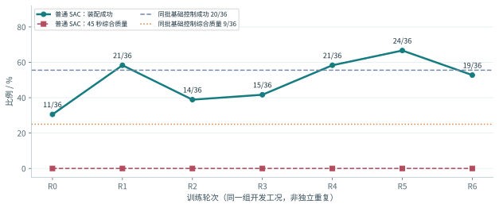
“最好 R5 有 24 次成功，为什么综合质量仍为零”可以从拒绝原因直接回答。R5 的 36 回合全部触发 active_policy_slew_rms_m_s2 质量门；此外，接触峰值力 10 次、接触峰值力矩 14 次、释放峰值力矩 10 次、实测滤波加速度 RMS 12 次等也超出相应门限。原因计数可重叠，不能相加成失败总数。这意味着即使单独解决策略动作变化率，也不能从现有记录断言所有成功回合会立即合格；还存在载荷、实测运动和独立稳定等问题。下面的条形图使用全部 R5 回合，不只取成功子集。R12
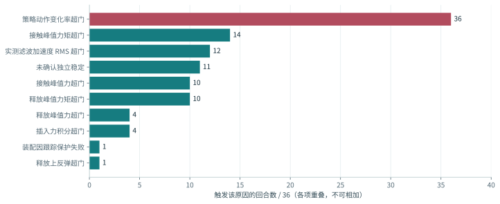
这一阶段训练后来被关闭，状态中包含 halted_invalid_physics，也保留了进程退出与复盘要求。因此本文把曲线作为历史诊断证据，而非已经完成物理有效性认证的算法基准。成功率提高、质量未过、基础设施/物理有效性存疑是三个并存事实；只取其中一个都不足以判断算法价值。R14
6.2 v0.2 演示为什么不能代替学习结果
v0.2 视频来自 optimization_v2 的时序动作正则分支，使用三条保存的成功轨迹重新布置视角，先显示小型侧面特写，再切三型号全景与近景。源清单记录各轨迹结果和重渲染前后的记录一致性；相机与剪辑没有产生新的物理试验。最终文件为 26.134 秒，相对原始过程 7.5× 播放。此信息属于媒体解释条件，不意味着我们否认样例中确实完成了相应动作。R15、R16
精选成功、播放加速和镜头布局会共同改变观看者对抖动、时长与可靠性的感知。视频可以证明某条保存轨迹在视觉上经历了插接和释放，不能估计失败概率，也不能确认 1 秒原速稳定窗口或载荷合格。下列原始示例保持其来源文件，不在网页中额外调速；但原录制抽帧和仿真时钟未独立校准，因此播放器秒数仍不直接作为装配节拍。V2 成功/失败标签来自发布包文件名，也不等于本地匹配实验的结局。
固定夹力学强化小模型 · v0.2
上游原始示例 / 三型号
发布包 data/example_run 中的原文件，网页未重新调速。原录制的帧率、抽帧与仿真时间关系未独立校准，因此不把播放器时间直接当生产周期，也不把示例来源推断成 V1/V2 的同条件测评结果。
V2 中型 / 成功与失败示例
来自 V2 包 data/videos_replace，按文件原有标签展示。它们与本地 36 工况评分不是同一份样本；“成功”标签仅代表发布者原生定义。
三型号的局部运动：落座、松爪与退出
下列近景从 v0.2 对应的三条历史成功轨迹重新取景，省去画面中无关的机械臂区域，便于跟踪夹指与固定夹的相对运动。三型循环各自保留原录制时序，没有强行对齐不同型号的阶段；它们展示所选轨迹中的行为，不构成三型号性能比较。
大型 · 侧面近景
中型 · 侧面近景
小型 · 侧面近景
三个片段均沿用既有 5× 状态回放；源轨迹、录制配置与文件 SHA-256 见 动态素材清单。需要检查具体受力时，可继续查看下方的可播放轨迹。
6.3 关于强化学习应得出的有限结论
目前证据支持的结论是：已尝试的学习接口和控制栈没有产生完整质量优势，而不是“强化学习不适合这个任务”。奖励、观测、动作范围、基线能力、接触有效性和终点定义都影响学习结果。若 actor 只能修正插入阶段 XY，而主要失败发生在释放交接与回撤，增加训练并不会自动创造未开放的控制自由度。若执行器把请求截断且内部状态不知情，网络还可能学习补偿这种接口失配，降低可迁移性。
因此后续学习应以可靠、可执行的基础控制为对照，明确残差含义、作用阶段和完整回报，分别比较零残差、规则残差和学习残差。训练 loss、Q 值和梯度步只适合诊断优化过程；最终证据必须来自相同任务、安全和物理条件下的闭环结果，并在多个种子和新工况上保持。这也是本轮报告将学习结果与控制候选分开讨论的原因。
7. 同条件原生实验：机制改动、收益与代价
7.1 V1 与 V2 的差异并不是新模型收益
同条件实验中 V1 成功 12/36、V2 成功 18/36；按大型、中型、小型分别为 V1 6/12、4/12、2/12，V2 6/12、2/12、10/12。总体增加六次主要来自小型，但中型减少两次。V2 改动包括落座 Z 容差 1.2 mm、保持 8 帧；中型力导向搜索与释放补偿；小型释放帧数 160→320、取消边开边抬的 3 mm 提升、限制夹指回退及增加固定 XY 补偿。共同权重未改变，不能把差异归为新网络训练。R5、R6
发布者包内还有另一组 30 例的 17/30→23/30 结果，使用其自身环境、并行和协议。它是值得参考的来源记录，但不是本机 36 工况的替代测量；更不能把发布者由结果中位数构造的“落座”标准当作本项目冻结质量门。群聊所述阻尼 A/B 参数也缺完整数值，包内机器人配置未体现一套全面改过的阻尼。因此我们实测的是明确保存的 V1/V2 控制版本，而非对别人全部实验结论的逐项复现。
7.2 C1：先修正搜索偏移的数学含义
圆周搜索本应围绕固定中心给出有界偏移 r[cosθ,sinθ]。原入口随机分支却把该偏移逐帧累加到 _xy_goal，实际输出相当于对圆周序列积分。即使每次偏移幅度为 1.2 mm，有限频率与阶段截断下累积目标仍可远离中心；离线检查记录到 9.194 mm 的指令峰半径。C1 将扰动改成最终输出中的绝对偏移，使这部分半径被明确约束在 1.2 mm 内。
这项修改修复了实现与设计意图不一致的问题，但不保证整体成功率提高。12 个预定工况中 C1 成功 6/12，与对应 V2 相同，附加抖动诊断仍为 0/12。因而正确结论是“消除搜索积分漂移，但单独不足以稳定闭环”，不能把无收益理解为原实现没有问题，也不能把逻辑修复本身算作任务性能改善。R17
7.3 C2：输出投影的机制及其约束边界
C2 在 C1 上增加两级欧氏球投影。设未约束请求为 rk、上一实际发送目标为 uk−1、实测末端为 xk，输出形式见式（3）。第一步限制请求相对上一输出的变化为 0.35 mm，第二步把该中间目标限制在当前实测位置 3 mm 范围内。
Πρ(v) = v · min[1, ρ / max(‖v‖, ε)]
ũₖ = uₖ₋₁ + Π0.35 mm(rₖ − uₖ₋₁)
uₖ = xₖ + Π3 mm(ũₖ − xₖ)该结构能抑制突发请求并限制命令相对实测状态跑远，但它不是严格的速度/加速度安全层。首先，0.35 mm/帧在 60 Hz 下对应第一投影约 21 mm/s 的变化量，并非后续 Goal 的每轴 8/8/10 mm/s；其次，第二次投影的中心 xk 在运动，最终 uk 相对 uk−1 的变化未必仍满足第一步的同一界；再次，关节空间回放及 IK、被动关节和接触执行还可产生额外差异。因此它的可信解释是输出整形和局部跟踪包络，而非全历史安全证明。R3
C2 完整组成功 22/36、成功加抖动诊断 22/36，高于 V2 的 18/36、0/36。固定夹本体横向运动残差 RMS 中位数由 0.884 降至 0.086 mm，原始全阶段腕力峰值中位数由 129.312 降至 100.822 N。然而，原生周期中位数由 15.583 增至 18.833 秒，插入原始力积分中位数由 440.512 增至 518.135 N·s。控制更平稳、峰值更低的同时，接触持续更长；不能把单一 RMS 改善概括为所有质量更好。
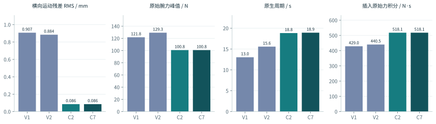
7.4 C3–C6：为何没有继续沿同一个参数扫下去
C3 只将实测包络放宽至 4.5 mm，预定 12 例成功 4/12；C4 去掉实测包络、保留步长限制，5/12，且出现接触容量警告；C5 将纵向力反馈和爬行同时缩为四分之一，2/12。对应 V2 在该预定子集为 8/12。因此“输出太紧，只要放开就好”和“力增益偏大，只要降低就好”均没有在这些工况得到性能支持。C4 的告警还使部分受力记录不适合用于可信力学优势证明。
这些失败具有机制价值。C2 的实际输出变慢后，内部目标与固定阶段帧数仍可按原逻辑推进；降低增益则进一步延后到位。C5 小型 case 00 在笛卡尔段 600 帧后转卸载时，固定夹 Z 误差仍约 12.1 mm。由此更合理的下一项假设不是继续放宽包络，而是检验输出受限、积分目标和阶段时钟之间的协调。C6 将受限 XYZ 输出反馈给内部积分器，得到原生成功 23/36、附加抖动通过 22/36，提供了有限改善信号；但它不是 C7 的直接父版本，C7 实际从 C2 分出。这一分支关系对理解消融非常重要。R18
7.5 C7：让超时逻辑观察实际推进
C7 在 C2 上修改停滞判断：笛卡尔段达到原超时阈值后，只有超过 180 帧没有累计刷新至少 2 mm 的实测 Z 低点，或阶段达到 1800 帧，才允许相应超时释放路径；总回合仍为 2700 帧/45 秒，终态和力门不变。该更新使用编码器末端进度，不靠固定夹真值触发新增时钟；但原有对准和落座逻辑仍使用真值，所以整套控制并没有因此变成可部署纯本体策略。R19
从控制意义上看，C7 允许确实仍在下行的回合把更多预算用在插入，而不在固定 600 帧时提前转释放。它也保留停滞与阶段硬上限，避免把所有失败无限拖长。因此它没有放宽总时限，却改变了阶段预算分配。后文 case 04 小型对照可以直接观察这一差异。C7 完整组成功和抖动诊断均为 25/36，大、中、小为 8/12、5/12、12/12；与 C2 相比新增的三次原生成功来自小型 case 04、07、09，没有反向丢失的成功。
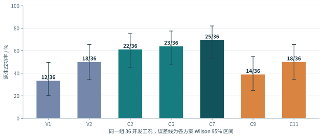
| 方案 | 原生成功 | 点估计 | Wilson 95% 区间 | 对 V2 胜 / 负 | 精确 p |
|---|---|---|---|---|---|
| V1 | 12/36 | 33.3% | [20.2%, 49.7%] | 4 / 10 | 0.1796 |
| V2 | 18/36 | 50.0% | [34.5%, 65.5%] | 参考 | — |
| C2 | 22/36 | 61.1% | [44.9%, 75.2%] | 10 / 6 | 0.4545 |
| C6 | 23/36 | 63.9% | [47.6%, 77.5%] | 11 / 6 | 0.3323 |
| C7 | 25/36 | 69.4% | [53.1%, 82.0%] | 11 / 4 | 0.1185 |
| C9 | 14/36 | 38.9% | [24.8%, 55.1%] | 7 / 11 | 0.4807 |
| C11 | 18/36 | 50.0% | [34.5%, 65.5%] | 11 / 11 | 1.0000 |
C7 对 V2 的绝对提升为 7/36，即 19.4 个百分点；它是“在这组开发工况上原生成功更多”的事实。精确配对 p=0.1185 和开发集复用意味着目前尚不能确认总体统计优势。C7 小型 12/12 的 Wilson 下界约 75.8%，也说明观察到 100% 并不代表新工况真实成功概率已知为 100%。这不是否定改进，而是区分机制证据与可靠性认证所需样本量。
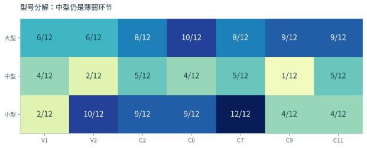
| 指标（中位数 / P95） | V1 | V2 | C2 | C7 |
|---|---|---|---|---|
| 原生周期 / s | 13.033 / 20.238 | 15.583 / 19.688 | 18.833 / 23.754 | 18.925 / 26.525 |
| 全阶段原始腕力峰值 / N | 121.812 / 1156.237 | 129.312 / 543.956 | 100.822 / 537.013 | 100.822 / 466.707 |
| 插入原始力积分 / N·s | 429.015 / 1336.399 | 440.512 / 1207.913 | 518.135 / 952.343 | 518.135 / 1343.641 |
| 插入跟踪差峰值 / mm | 10.673 / 64.241 | 10.673 / 32.584 | 7.111 / 11.152 | 7.111 / 11.152 |
| 固定夹横向运动残差 RMS / mm | 0.907 / 3.050 | 0.884 / 2.036 | 0.086 / 1.361 | 0.086 / 1.071 |
| 释放固定夹 XY 位移 / mm | 4.703 / 31.882 | 3.093 / 10.890 | 1.831 / 35.338 | 1.563 / 14.427 |
| 最终三维位置误差 / mm | 2.208 / 83.533 | 1.166 / 10.503 | 1.874 / 96.005 | 1.674 / 51.492 |
分布尾部仍需要单独讨论。C7 的全阶段原始腕力峰值 P95 约为 466.7 N，虽然低于 C2 的约 537.0 N，固定夹最终位置误差 P95 仍约 51.5 mm；插入原始力积分 P95 约 1343.6 N·s，高于 C2 的约 952.3 N·s。中位数改善不能代表失败尾部已经消失。由于每个方案仅 36 例，这些经验 P95 本身也不稳定，适合定位风险而非认证高分位性能。它们与正式 Goal 的“成功完整周期 P95≤15 秒”是不同量，后者还要求统一完整终点。
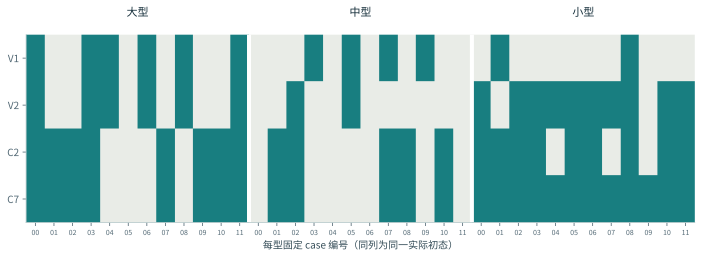
7.6 释放候选 C8–C11 与完整实验账本
C8 尝试固定卸载目标，2/12；C9 仅做 Z 反积分饱和，14/36；C10 关闭释放 XY 积分引导，2/12；C11 改用比例释放引导，初筛曾有较好表现，但完整组仅 18/36，小型从 C7 的 12/12 降为 4/12。它们说明释放引导确实会影响结局，却不支持“把某个积分关掉即可普遍修复”。固定偏置、比例误差和受力补偿与夹指状态共同作用，必须对交接过程整体设计。
下面保留全部十三个原生实验臂。n=12 是预定子集初筛，n=36 是完整已见开发组，不能直接以比例排名。账本累计 324 次只指这一原生系列，不包含所有历史训练、终点扩展和物理诊断，也不包含装配前启动失败。失败未被重复运行到成功后覆盖。
| 候选 | 机制 | 原生成功 | 成功＋抖动诊断 | 大 / 中 / 小成功数 | 证据范围 |
|---|---|---|---|---|---|
| 正在加载本地数据… | |||||
8. 代表性轨迹：从时钟失配到回撤约束冲突
8.1 案例 A：C2 与 C7 在小型 case 04 的阶段交接
为了避免仅凭总体成功数解释 C7，我们对齐同一实际初态下 C2 与 C7 的小型 case 04。两条轨迹在 3.783 秒进入 cart_descend。C2 在全程第 827 帧、13.783 秒转入 unload，对应笛卡尔段已运行 600 帧，此时保存的固定夹 Z 目标差约 −10.780 mm；C7 在第 893 帧、14.883 秒才转入卸载，差约 −1.935 mm，随后释放入口约 −1.024 mm。这里使用日志原始有符号差，负号仅表示该字段的方向，归因时比较其绝对值。
这一案例的直接观察是：C7 比 C2 多留了约 1.10 秒插入时间，卸载入口的残余 Z 差显著缩小，且该工况由 C2 原生失败变为 C7 原生成功。由于初态与物理一致、C7 主要修改计时条件，这支持“固定超时在部分受限输出工况中提前交接”的机制解释。它不证明新增时间可以解决所有案例，也不证明此时已完全落座、脱离或满足九项质量；约 1.935 mm 的差甚至与控制分支中的兜底交接有关，仍需看实际触发记录而不能只套理想落座阈值。
8.2 案例 B：局部输出包络与全历史跟踪是不同保证
C7 中型 case 00 的位置、指令、受力与阶段曲线见图 9。应同时观察目标请求、实际末端和阶段切换，而不能只看 ee_cmd 相邻变化。命令相对实测位置受 3 mm 约束，仍不意味着实际执行全过程最大误差 ≤5 mm：关节空间回放不一定走同一笛卡尔投影，IK/驱动和记录时序也会产生差异，释放阶段的行为还可能不同。
原生评审中 V1/V2/C2/C7 的全历史 5 mm 通过数均为 0/36。这个数说明原 Goal 的一项必要保护要求尚未满足，不能被插入段的低抖动诊断覆盖；但要把它进一步归因到具体控制分支，仍需逐帧对齐发出命令与物理步后的测量。仅凭一张聚合峰值表，不能把所有超差都归因于同一个输出投影错误。R10
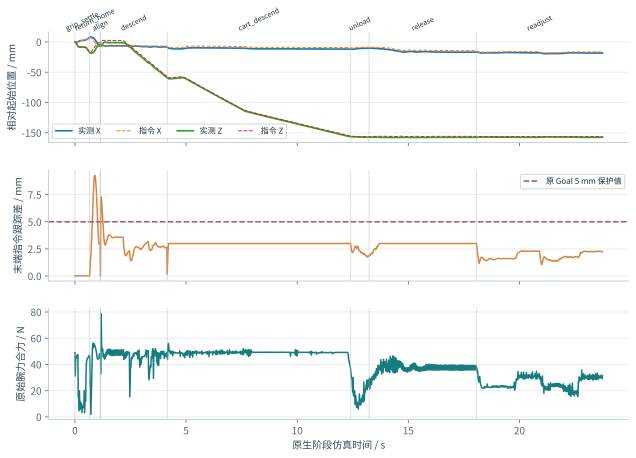
8.3 统一回撤实验为何必须核对原生前缀
为了知道原生成功能否延伸到完整任务，实验在原生终点后接入共同开指/回撤适配器。适配器只使用编码器与腕力生成动作，固定夹真值用于评价。原始共同适配器还使用了 15 mm/s 名义回撤速度和对称夹指目标限幅；后来才校正为实际非对称关节范围，并在最终候选中显式加入原 Goal 的笛卡尔速度/加速度。因此这些扩展首先是必要终点与机制诊断，不能被称为从第一批起已满足全套 Goal 运动约束的控制基准。图 10 跨越若干执行版本，用来展示失败如何演变，不是一张严格单因素消融图。若插接过程同时改变，后续差异就无法归于退出机制，因此每批比较初态、物理、原生 NPZ 的各数组形状与逐元素值，并检查容量告警和完成标记。共同终点 36 例的原生前缀均一致，才使“同一原生动作在更完整终点下失败”成为可解释证据。R20
结果为 V1 2/12、V2 3/12、C7 0/12。首先，这没有把原生 C7 25/36“算错”，而是提出了不同且更完整的问题；其次，分母只有每型四个共同开发工况，不可直接写成 C7 的完整 36 例成功率为 0/36；最后，由于脱离与补偿质量尚未认证，即使必要终点通过，也不能宣称完整 Goal 成功。必要门可以明确否决一部分任务结局，但无法单独证明全部要求成立。
8.4 案例 C：大型固定姿态回撤与自适应腕姿
大型固定姿态回撤在约 43–46 mm 附近失败。只读诊断显示存在肘部 roll 接近限位、IK 分支跳变及逐关节截断的影响，而腕部编码器 FK 与观测差在相应有效记录中小于约 0.022 mm，因此不能简单解释成“末端位置读错了”。连续 IK 与斜向路径的组合曾得到 0/9；分离后，斜向路径仍 0/9，连续 IK 加原垂直路径 2/9，与对应参考相同。运动学连续性值得修正，但单独修正没有带来必要终点净收益。R18、R21
随后允许受限腕姿自由，并让位置进度按可实现 FK 更新，大型三例都实际达到约 106 mm，说明固定姿态/进度时钟确实限制了退出。然而固定夹也被拖带约 8.4–8.9 mm，三控制器合计必要终点仍为 2/9。该结果把问题进一步分解为“运动学退出可达”与“工件不被带走”：前者改善不保证后者成立。因此不能把轨迹更长或 100 mm 达成率提高称为装配成功率提高。R22
8.5 案例 D：横向交接的收益、混杂与约束后失效
横向交接候选基于开指末态重置 XY 参考，并使用当前可实现 FK 的增量目标。三控制器合计必要终点从 2/9 增为 4/9，V1/V2 各 2/3、C7 0/3。大型新增通过的同时，实际末端外移约 14.7–15.7 mm，峰值约 17–18 mm。这远大于一个微小参考校正，说明实现实际上产生了空间让位路径。因为“参考锚点重置”和“增量 FK 路径让位”同时改变，目前不能把收益唯一归给某一个因素；V1/V2 大型轨迹又相同，不能算两次独立机制复现。R23
执行审计进一步发现混合 FK 的平移速度与加速度超过原 Goal，例如 C7 中型 X 约 17.9、Z 约 29.8 mm/s。混合 FK 同时使用命令与实测被动关节，有限差分并非纯规划器动作，但这些测量仍不足以支持“实际执行已合规”。随后将每轴速度 [8,8,10] mm/s、加速度 [80,80,100] mm/s² 加入连续 IK 并做非线性 FK 回查，必要终点降至合计 1/9，V1 1/3、V2 0/3、C7 0/3；大型局部求解在约 50–53 mm 处失败。R24、R25
这一步不能推出“完整任务在这些约束下全局无解”。它只说明当前局部求解器、路径参数化、初始姿态和时间预算的组合不能保持先前收益；换用更好的预接触姿态、共同规划或不同参数化仍可能改善。另一方面，不能为了保留 4/9 就撤掉正式速限，宣称“只要放开即可成功”。先前指标没有同时覆盖所有约束，是收益后来被否决的根本原因。
逐帧查看回撤与固定夹响应
两个面板采用各自纵轴；横向位移是末端相对扩展起点的 XY 距离，固定夹误差是相对任务目标的三维距离。原始 60 Hz 序列完整保留在 轨迹 JSON，互动曲线为绘图抽样，游标读数使用原始记录。未达 100 mm 或不存在完整稳定窗口的轨迹也保留展示。
8.6 负面结果如何收缩假设空间
除了上述主线，实验还测过延后转腕、校正夹指非对称限位、8/12 mm 开指请求、开指时保持腕臂命令等。转腕方案 1/9；两种开指行程均 2/9；腕臂保持 2/9，均未形成净提升。正确关节限位应作为实现修复保留，但“更多开指就能消除拖带”和“只是不应在开指时重复 IK”等简单解释没有通过这些对照。部分大型夹指在原生终点已接近实际范围边界，追加请求不代表追加实际行程，这也再次说明应测量动作结果，而不是只记录请求值。R26、R27
这些结果不是无价值的失败：它们排除了一些单因素解释。但如果每排除一个原因就继续沿另一参数无界扫描，实验仍会变得碎片化。应该把已排除与未排除的原因放到同一假设树，并以完整任务的共同控制结构收敛。下一节的接触诊断就是这样一个必须保留、但不能反过来吞没全部控制问题的分支。
| 阶段/机制 | 逐控制器必要终点通过（保留分母） |
|---|---|
| 共同追加终点 | c7_progress_timeout: 0/12v1: 2/12v2: 3/12 |
| 连续 IK＋斜向路径 | c7_progress_timeout: 0/3v1: 0/3v2: 0/3 |
| 路径/执行器消融 | c7_progress_timeout__diagonal_native: 0/3c7_progress_timeout__vertical_continuous: 0/3v1__diagonal_native: 0/3v1__vertical_continuous: 1/3v2__diagonal_native: 0/3v2__vertical_continuous: 1/3 |
| 延后转腕 | c7_progress_timeout: 0/3v1: 1/3v2: 0/3 |
| 正确夹指限位、8/12 mm 请求 | c7_progress_timeout__bounded12: 0/3c7_progress_timeout__bounded8: 0/3v1__bounded12: 1/3v1__bounded8: 1/3v2__bounded12: 1/3v2__bounded8: 1/3 |
| 开指保持腕臂命令 | c7_progress_timeout__bounded8: 0/3v1__bounded8: 1/3v2__bounded8: 1/3 |
| 自由腕姿＋可达进度 | c7_progress_timeout__bounded8: 0/3v1__bounded8: 1/3v2__bounded8: 1/3 |
| XY 交接＋增量让位 | c7_progress_timeout__bounded8: 0/3v1__bounded8: 2/3v2__bounded8: 2/3 |
| 加入笛卡尔速度/加速度 | c7_progress_timeout__bounded8: 0/3v1__bounded8: 1/3v2__bounded8: 0/3 |
9. 接触有效性、测量链与物理解释的限制
9.1 观察器本身是否改变了被观察过程
接触身份能够帮助判断哪个夹指仍在拖带，但启用报告器可能改变场景状态。实验中在原生终点后启用 reporter 的分支出现回撤分叉，报告还为空，因此被隔离；不能从空报告得出“没有接触”。把报告器配置提前到首次 reset 之前后，六例原生与回撤逐元素一致，才得到可用于参考诊断的非零接触记录。由此可见“只加日志”不是天然被动操作，测量链本身需要对照。
其他历史测量也有明确撤销边界：旧 AABB 变换曾重复叠加，相关间隙结果被隔离；曾混用刚体原点与质心的残差解释也不再采用。本文不把已撤销的图或推理当作物理根因证据。有效诊断分支保存实际运动、USD/编码器/FK、报告身份与运行时参数，而不是仅依赖 authored 文件默认值。R18
9.2 运行时参数与几何不一致现象
运行时读回显示，固定夹和两指 contact offset 各约 5.450000986 mm，rest offset 为 0；相应材质摩擦读回为 1.0。两物体 contact offset 之和约 10.9 mm 描述接触生成相关范围，不能简单当作真实表面、允许穿透或接触已经消失的距离。近零 reported separation 与几何距离的关系还依赖碰撞代理、cooked 形状、法向和算法语义。R28
在已验证可重放的原物理分支中，选取冲量大于 10−7 N·s、报告分离绝对值 ≤0.05 mm 的 proxy 接触，并计算其相对 authored convex hull 的保守几何距离。部分报告达到 2–10.8 mm 差异，前后帧与法向偏移检查未完全解释。这是需要进一步解释的可观测不一致，但不自动证明真实工件发生同量穿模，也不证明某个引擎实现错误。所测对象是特定代理形状与选定报告，不是所有接触的异常率。R29
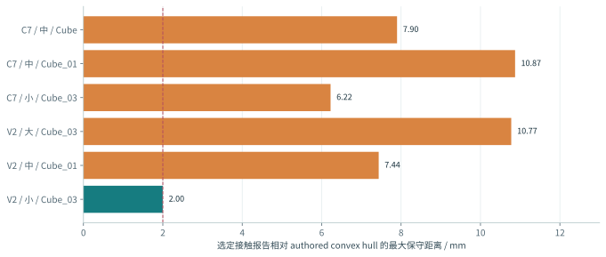
9.3 两项反证实验能说明什么
第一项只将 PCM 改为 SAT，并在 SAT 内做有/无观察器六对轨迹核验。V2 中型仍有选定 124 条报告中的 61 条离 authored hull >2 mm，因此“所有几何差异都由 PCM 的持久接触缓存造成”的单一解释不能成立。第二项回到 PCM，将接触生成 offset 从约 5.45 mm 减为 2.725 mm，保留 rest、摩擦、几何等条件；选定 28 条报告仍有 16 条 >2 mm，最大约 4.212 mm。这说明仅减小 offset 没有消除现象，未被采用为修复。R30、R31
两批物理设置改变了轨迹和接触样本，61/124 与 16/28 不能被当作同分布独立样本比较，更不能说“异常减少多少个百分点”。参考必要终点 0/6 或 1/6 也只是诊断附带观察，不能晋级为原任务性能。当前合理结论是保留原物理比较边界，继续核对 cooked 几何、坐标、报告时刻与接触语义；如果以后确认资产或物理确实错误，应另立物理版本并重建 V1/V2/C2/C7 匹配基线。
还应区分历史 GPU 隔离异常与本轮 CPU 对照。旧分支曾记录 GPU 冷接触异常，不能由此推断 CPU 当前失败都是同一种误差；本轮原生实验明确使用 CPU，仍有控制、交接和执行问题。控制自激与接触表示不一致可能共存，任何单一叙事都不足以覆盖全部证据。
10. 系统性讨论：为什么局部收益没有组合成完整优势
10.1 问题首先在研究对象与接口，而非实验数量不足
回顾实验序列，可以看到明确的局部成果：搜索输出的数学含义被纠正，输出突变下降，实际推进获得更多时间，固定姿态退出限制被突破，部分让位路径避免了拖带。但这些成果在不同协议和不同模块中成立：有的在原生终点下评价，有的只在追加终点中评价，有的尚未包括原 Goal 的完整速度约束。因此，所谓“进展混乱”并不是单指命名或报告方式，而是系统没有从一开始就以同一任务和约束集合设计。
原生状态机结束后再接退出适配器，保留了基线可比较性，却把不适合回撤的末端姿态、开度边界和积分状态一并传给适配器；后者只好再通过自由腕姿、重置参考和增量路径补偿。这个研究设计适合诊断“原生结果为什么不完整”，但不应长期成为最终架构。完成诊断后，应把完整交接纳入基线，而非继续要求末端适配器修补所有前史。
10.2 内部意图、发送命令与物理结果必须共享进度
当前至少存在三种进度：内部积分目标的位置、经过投影/IK 的发送命令、编码器测到的实际位置。它们可能因饱和、不可达、接触和时延分离。固定帧数超时又引入第四种“时间进度”。若状态机按内部目标或经过帧数宣布到位/停滞，实际工件仍受阻，释放就会发生在错误物理状态。C7 的局部收益正表明：把真实推进反馈给阶段逻辑，比单纯扩大输出更有依据。
然而，编码器末端下行也不能单独证明固定夹插入：抓持滑移可以让两者脱钩，接触压缩也可以造成短时位移。因此完整系统需要共享的状态估计和阶段契约，明确哪些量证明进度、哪些量只作保护。可达进度、载荷转移与固定夹保持应由不同观测交叉检查，而不是寻找一个能替代所有物理事件的万能标量。
10.3 因果结论应分成三个强度层次
第一层是实现一致性结论，例如圆周偏移累积与设计意图不符、每帧 creep 没有乘 dt、开指请求受实际关节范围限制。这些可由源码和离线检查明确判断。第二层是受控局部机制证据，例如 C7 在相同初态/物理下延后交接并挽回小型三例，支持计时与执行耦合解释。第三层是总体可靠性或唯一根因结论，它要求更多独立工况、完整消融和测量链有效性，当前尚不具备。
将第二层直接写成第三层，是过去方案容易显得反复的原因：一次改善被当成根因已解决，后续阶段失败又迫使结论改写。本文保留局部收益，但限制其适用范围。尤其是横向交接同时改变锚点与增量路径、局部求解失败不证明全局不可达、接触几何异常不证明引擎错误，这些限制是理解结果本身的必要条件。
10.4 对“目前最好版本”的明确回答
若问题是“哪个视频最适合展示动作”，v0.2 精选演示具有三型全景与侧面近景；若问题是“哪个候选在完整 36 个已见开发工况的原生成功点估计最高”，答案是 C7，25/36；若问题是“哪个统一方案已在完整回撤、独立稳定、九项质量及新工况上证明更优”，目前没有这样的已认证候选。三种回答并不矛盾，分别对应展示、开发选型与最终验收。
同样，“目前成功率是多少”不能只回答一个百分比。完整技术表述应是：旧协议基础控制 55.6% 成功、25.0% 综合合格；本轮特权观测原生轨道 C7 69.4% 成功；共同必要终点 C7 0/12；最终独立验证尚未开展，完整 Goal 未达成。明确条件比选一个最好看的数字更有信息量。
11. 下一阶段方案：统一完整任务后再评价学习收益
11.1 先冻结任务与测量契约
第一步不是再启动更多训练，而是把所有阶段使用的起点、终点、坐标、时钟和硬约束统一。正式协议需要写清粗定位交接时刻、100 mm 回撤起算框架、独立稳定窗口、脱离证据和缺测处理；力/力矩应明确载荷、重力、偏心及惯性处理；每帧记录请求、基础动作、残差、限幅结果、IK 输出和实际运动。评价器既需要接受真正通过的轨迹，也需要对“短暂到位未脱离”“回撤带走”“低力但仍夹住”“超时保护停”等反例给出一致失败理由。
这项工作应以保存轨迹和最小合成反例验证为主，不必立即增加高成本仿真。只有测量链缺少必要观测时，才做明确目的的最小仪器化实验。输出应是一份版本化协议、一套可回放评价器及边界案例，而不是又一份只有口号的计划。历史评价阈值仍保留，任何正式修改需要另立版本，不能对已观察结果追溯放宽。
11.2 将落座、卸载、开指与退出共同规划
建议把原生“结束”和退出适配器之间的断点前移，形成共享状态的混合控制器。进入落座阶段时，不仅检查位置，还预检当前抓持与腕姿是否存在符合约束的退出通道；卸载阶段按腕部和夹指同步动作转移载荷；开指后根据编码器、补偿力与可用估计确认脱离状态；回撤进度由可行规划与实际运动共同驱动，保护触发则进入明确定义的失败/恢复状态。
连续部分可采用槽口坐标系中的分阶段导纳，名义轨迹与柔顺偏移分开。候选模型写为 Mdξ̈+Ddξ̇+Kdξ=wext−wref，但应从已验证坐标和最相关自由度开始，不应一开始放开任意六维探索。参考力、阻尼、进给和姿态范围按阶段调度，并限制参数变化率。M、D、K 为正并不足以保证含时延、离散化和变化接触刚度时稳定，仍需闭环响应与能量/保护审计。
执行层同时考虑关节位置/速度/加速度、笛卡尔速度/加速度、跟踪包络与工作空间，在非线性 FK 回查后发送，再用实测数据独立审计。若局部问题不可行，控制器应沿预定义安全退出或停止，而不是通过逐关节粗截断制造未知末端运动。下一项最有信息量的消融，是把 XY 锚点重置与真实横向让位分开，明确几何避让究竟需要多少空间，再重新设计满足速度约束的路径；不应直接照搬约 15 mm 的历史偏移。
11.3 用可观察接触状态组织有限恢复
仅靠平移误差不能区分自由、可滑入、楔住、滑移、落座或尚未脱离。建议先用规则构建带滞回的状态估计：输入包括补偿力/力矩、命令—实测差、插入进度、夹指运动、视觉位姿置信度与持续时间。规则状态机的目的在于让恢复动作有明确前提，而不是把所有异常都转化成随机搜索。数据充足后，才比较短时序分类器是否提高状态识别。
恢复动作限定为小范围卸力、低速回退、重新对准、必要姿态让位和受保护退出；每项定义触发、终止、最大预算及再次失败处理。这样可以区分“插入口错位需要横向搜索”和“已经落座但夹指拖带需要交接控制”，避免同一个 XY 网络承担没有足够观测和动作权限的所有任务。
11.4 学习模块应学习基线未覆盖的修正
在统一基线可靠后，再定义真正残差 u=ubase+δu。训练记录必须包含同一时刻的观测、基础请求、残差请求、投影后的实际动作和后继状态，按采集回合与内容去重，不能把同一回合副本或相邻帧跨集当独立验证。训练与推理共用特征构造，固定目标偏置、力去皮、阶段和单位，正确区分成功终止、失败终止与时间截断。
输入可沿用历史窗口，但需要根据真实接触响应时标验证长度；包括合法视觉/位姿估计及置信度、补偿力矩、末端速度、阶段、型号、基线动作和上一实际动作。初始输出保持零或小幅修正，作用于明确阶段的 XY、相关姿态、参考力或阻尼之一，不要一次同时扩大所有自由度。奖励需包含最终释放保持与失败代价，动作平滑奖励与输出滤波分别做消融；安全约束不能仅靠奖励惩罚代替。
比较顺序为零残差、规则残差、学习残差，使用同一基础控制、终点、物理与合法信息。如果学习没有净收益，保留工程基线与负面结果；如果有收益，再以至少三个训练种子分别评价，而非跨种子合并相同测试工况提高样本量。是否继续使用 SAC、修正离线方法或选择其他算法，应由数据覆盖与闭环收益决定，不由可用 GPU 数量决定。
11.5 以阶段门组织实验，而非无限循环候选
第一阶段的工程目标是让三型预定难例同时满足退出、保持和硬约束，再扩展到完整 36 开发工况。原 Goal 的 45 秒里程碑为综合合格至少 31/36，每型至少 10/12。这个门必须使用统一完整任务与质量测量，不能把原生成功或抖动诊断更名为综合合格。达标后再挑战 30 秒、20 秒和最终 15 秒成功完整周期 P95，同时报告全部失败的时间与载荷代价。R32
最终冻结后使用每型 100 个新工况，要求总体完整成功率及综合质量合格率 ≥95%、每型成功率 ≥90%、成功完整周期 P95≤15 秒，并检查规定的 Wilson 下界。学习方案至少三个训练种子分别满足条件，无学习方案按单一冻结方案验收，不虚构种子。看过验证结果后再调参，该集即转为开发证据，需要新隔离集。当前 36 工况和历史 holdout 都已被观察，不能重新标成最终验证。
自动化应围绕假设树与阶段门运行：每批冻结源码/资产/权重和最多两个明确因素，先小批完整对照，再审查失败类别与约束，最后决定扩展、拒绝或改机制。连续三轮无收益时必须更新结构假设，不能只换参数或名字。保留单调度者、完成标记、资源锁和检查点，每卡最多四环境；基础设施启动失败与真实装配失败分开记录，不重跑到成功。当前用户暂停决定仍有效，本报告不恢复任何实验。
12. 结论、局限与可复核材料
12.1 已经得到的结论
本项目已经从“能播放一次成功插入”的演示，推进到能够区分命令、实际运动、接触和独立终点的实验平台。具体收益包括修正圆周偏移累积、通过输出投影降低本体高频运动、用实测推进修复部分提前交接，以及识别固定姿态退出与释放拖带的冲突。这些成果具有明确机制和轨迹依据，值得保留。
当前仍没有一套方案在共同物理、信息和完整约束下证明完成高可靠装配。C7 的 25/36 是原生开发轨道最好点估计，不能代表完整质量；共同必要终点 0/12 则直接说明其原生收益没有自动转化为完整退出优势。后续应先统一整条交接执行链和评价契约，再以相同条件评价学习模块，而不是继续用单个局部指标驱动全部迭代。
12.2 本报告的局限
本文只分析既有实验，没有补新独立样本，因此对失败原因的解释受历史设计约束。候选经过多轮开发选型，有限配对统计不能消除选择偏差；部分小批同时改变多个行为，不能唯一归因；接触诊断相对于 authored 几何，尚缺运行时 cooked 形状与真机接触参考；历史九指标阈值校准样本少，部分训练批次后被标记有效性不足；原生实验仍含特权真值。这些限制同时约束性能、因果与迁移结论。
报告采用学术研究的组织与论证粒度，但没有把内部记录伪装成公开论文，也没有为未实施方法编造结果。新增内容是对历史源码和数据的重新分析，以及明确标记的设计建议。真实工位照片、标定数据和真机结果仍待补齐；对外发布前需另行校对媒体与项目信息范围。
12.3 复核入口与数据来源
网页中的曲线与表格通过本地脚本从已有 JSON/NPZ 生成；所有视频均来自现有录制，截图按固定时间提取。静态 SVG 与 PNG 可单独打开查看，逐帧交互保留 60 Hz 标量序列，未把绘图抽样当成新的物理轨迹。来源清单保存原始相对路径、字节数和 SHA-256；它支持定位证据，不等于整个实验数据集已经打包。
| 编号 | 可复核文件 | 用途 |
|---|---|---|
| R1 | 原始算法审查与改进路线 | 方法与源码分析 |
| R2 | 共同原生实验冻结协议 | 场景、初态、物理与哈希 |
| R3 | C7 冻结控制器源码 | 投影、轴向反馈与阶段计时 |
| R4 | V2 data generator 源码 | 控制器工厂与数采过程 |
| R5 | V2 型号配置 | 实际增益、偏置与释放参数 |
| R6 | V2 发布包审查 | 源码确认与作者报告的区分 |
| R7 | SAC R5 训练 manifest | 280 维接口、频率与数据 |
| R8 | SAC R5 训练摘要 | 梯度步、转移数与未收敛标记 |
| R9 | V1/V2 匹配基线实测 | 原生评价时刻与度量 |
| R10 | 原生评审实现 | 逐例指标与配对计算 |
| R11 | 共同必要终点实现 | 100 mm 与稳定窗口定义 |
| R12 | SAC 七轮累计 scorecard | 质量阈值、拒绝原因与结果 |
| R13 | 原生系列完整评审 | 逐例原生结局与统计 |
| R14 | 历史学习批次关闭记录 | 历史有效性与批次关闭原因 |
| R15 | v0.2 媒体核验记录 | 播放速度、布局与来源 |
| R16 | v0.2 三型轨迹索引 | 精选样例与重渲染一致性 |
| R17 | C1–C5 机制与权衡 | 早期同条件实验复盘 |
| R18 | 完整自动迭代记录 | 后续机制与审查决定 |
| R19 | C7 预定机制协议 | 实测进度与时限 |
| R20 | 共同终点初筛评审 | 各 12 例及原生前缀 |
| R21 | 路径与连续 IK 消融 | 两因素分离结果 |
| R22 | 自适应姿态终点评审 | 可达回撤与拖带 |
| R23 | 横向交接结论 | 收益、路径混杂与未认证 |
| R24 | 横向交接运动审计 | 实测/混合 FK 与约束 |
| R25 | 笛卡尔限速终点评审 | 加入硬约束后结果 |
| R26 | 8/12 mm 开指对照 | 实际限位与无净收益 |
| R27 | 开指腕臂保持对照 | 原生前缀与逐例结果 |
| R28 | 接触运行时参数 | 实际 offsets 与材质 |
| R29 | proxy 接触几何检查 | 选择条件、保守距离与局限 |
| R30 | SAT 诊断结论 | 反证与不晋级说明 |
| R31 | 接触距离诊断结论 | 反证与原物理保留 |
| R32 | 正式 Goal 任务说明 | 完整任务与最终验收 |
补充材料：所有来源 SHA-256 · 原生完整实验账本 · 案例 A 阶段时间与来源 · 十二条扩展轨迹。